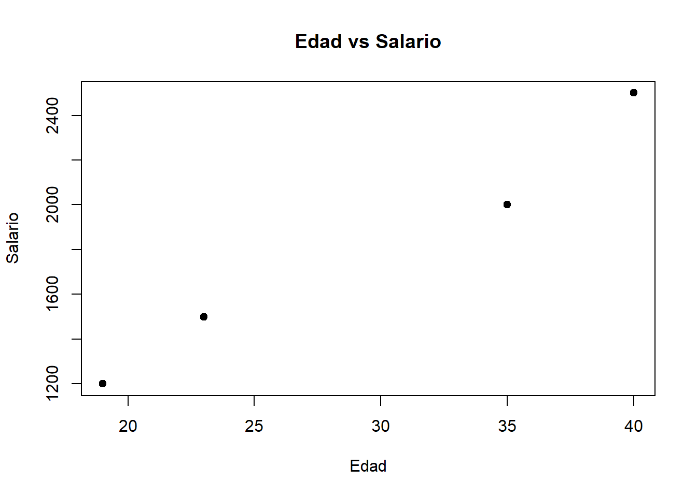
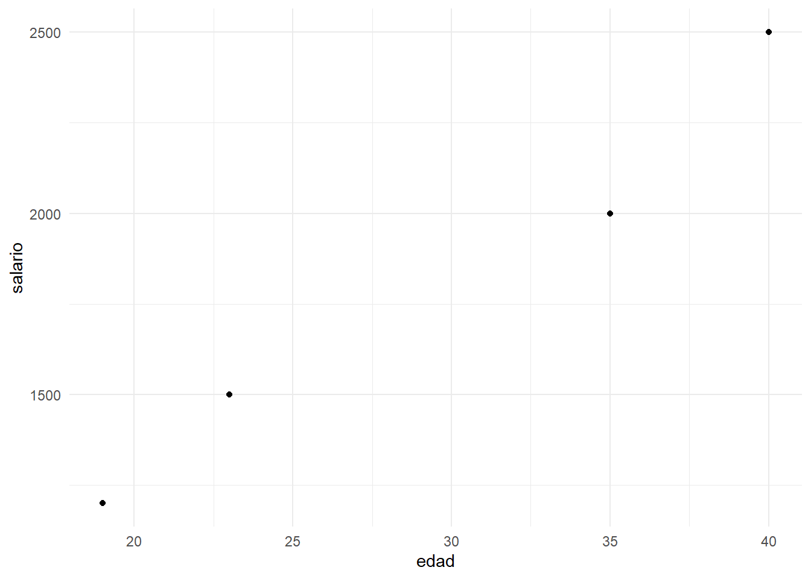

2 + 3[1] 510 - 4[1] 66 * 7[1] 4220 / 5[1] 42^3[1] 8sqrt(25)[1] 5(2 + 3) * 4[1] 20R es un lenguaje de programación diseñado para análisis estadístico, modelado matemático y visualización de datos. RStudio es un entorno de desarrollo que facilita la ejecución de código, la gestión de proyectos, la creación de documentos dinámicos y mucho más.
2 + 3[1] 510 - 4[1] 66 * 7[1] 4220 / 5[1] 42^3[1] 8sqrt(25)[1] 5(2 + 3) * 4[1] 20x <- 10
y <- 3
x + y[1] 13log(10)[1] 2.302585exp(1)[1] 2.718282sin(pi/2)[1] 1Usamos el paquete epitools.
# install.packages("epitools")
library(epitools)
dates <- c("1/1/04", "1/2/04", "1/3/04", "1/4/04", "1/5/04",
"1/6/04", "1/7/04", "1/8/04", "1/9/04", "1/10/04", NA, "1/12/04",
"1/14/04", "3/5/04", "5/5/04", "7/6/04", "8/18/04", "12/13/05",
"1/5/05", "4/6/05", "7/23/05", "10/3/05")
aw <- as.week(dates, format = "%m/%d/%y")
aw$dates
[1] "2004-01-01" "2004-01-02" "2004-01-03" "2004-01-04" "2004-01-05"
[6] "2004-01-06" "2004-01-07" "2004-01-08" "2004-01-09" "2004-01-10"
[11] NA "2004-01-12" "2004-01-14" "2004-03-05" "2004-05-05"
[16] "2004-07-06" "2004-08-18" "2005-12-13" "2005-01-05" "2005-04-06"
[21] "2005-07-23" "2005-10-03"
$firstday
[1] "Sunday"
$week
[1] "52" "52" "52" "01" "01" "01" "01" "01" "01" "01" NA "02" "02" "09" "18"
[16] "27" "33" "50" "01" "14" "29" "40"
$stratum
[1] 12417 12417 12417 12424 12424 12424 12424 12424 12424 12424 NA 12431
[13] 12431 12480 12543 12606 12648 13131 12788 12879 12984 13061
attr(,"origin")
[1] "1970-01-01"
$stratum2
[1] 12417 12417 12417 12424 12424 12424 12424 12424 12424 12424 <NA> 12431
[13] 12431 12480 12543 12606 12648 13131 12788 12879 12984 13061
105 Levels: 12410 12417 12424 12431 12438 12445 12452 12459 12466 ... 13138
$stratum3
[1] "2003-12-31" "2003-12-31" "2003-12-31" "2004-01-07" "2004-01-07"
[6] "2004-01-07" "2004-01-07" "2004-01-07" "2004-01-07" "2004-01-07"
[11] NA "2004-01-14" "2004-01-14" "2004-03-03" "2004-05-05"
[16] "2004-07-07" "2004-08-18" "2005-12-14" "2005-01-05" "2005-04-06"
[21] "2005-07-20" "2005-10-05"
$cweek
[1] "51" "52" "01" "02" "03" "04" "05" "06" "07" "08" "09" "10" "11" "12" "13"
[16] "14" "15" "16" "17" "18" "19" "20" "21" "22" "23" "24" "25" "26" "27" "28"
[31] "29" "30" "31" "32" "33" "34" "35" "36" "37" "38" "39" "40" "41" "42" "43"
[46] "44" "45" "46" "47" "48" "49" "50" "51" "52" "01" "02" "03" "04" "05" "06"
[61] "07" "08" "09" "10" "11" "12" "13" "14" "15" "16" "17" "18" "19" "20" "21"
[76] "22" "23" "24" "25" "26" "27" "28" "29" "30" "31" "32" "33" "34" "35" "36"
[91] "37" "38" "39" "40" "41" "42" "43" "44" "45" "46" "47" "48" "49" "50" "51"
$cstratum
[1] 12410 12417 12424 12431 12438 12445 12452 12459 12466 12473 12480 12487
[13] 12494 12501 12508 12515 12522 12529 12536 12543 12550 12557 12564 12571
[25] 12578 12585 12592 12599 12606 12613 12620 12627 12634 12641 12648 12655
[37] 12662 12669 12676 12683 12690 12697 12704 12711 12718 12725 12732 12739
[49] 12746 12753 12760 12767 12774 12781 12788 12795 12802 12809 12816 12823
[61] 12830 12837 12844 12851 12858 12865 12872 12879 12886 12893 12900 12907
[73] 12914 12921 12928 12935 12942 12949 12956 12963 12970 12977 12984 12991
[85] 12998 13005 13012 13019 13026 13033 13040 13047 13054 13061 13068 13075
[97] 13082 13089 13096 13103 13110 13117 13124 13131 13138
attr(,"origin")
[1] "1970-01-01"
$cstratum2
[1] "2003-12-24" "2003-12-31" "2004-01-07" "2004-01-14" "2004-01-21"
[6] "2004-01-28" "2004-02-04" "2004-02-11" "2004-02-18" "2004-02-25"
[11] "2004-03-03" "2004-03-10" "2004-03-17" "2004-03-24" "2004-03-31"
[16] "2004-04-07" "2004-04-14" "2004-04-21" "2004-04-28" "2004-05-05"
[21] "2004-05-12" "2004-05-19" "2004-05-26" "2004-06-02" "2004-06-09"
[26] "2004-06-16" "2004-06-23" "2004-06-30" "2004-07-07" "2004-07-14"
[31] "2004-07-21" "2004-07-28" "2004-08-04" "2004-08-11" "2004-08-18"
[36] "2004-08-25" "2004-09-01" "2004-09-08" "2004-09-15" "2004-09-22"
[41] "2004-09-29" "2004-10-06" "2004-10-13" "2004-10-20" "2004-10-27"
[46] "2004-11-03" "2004-11-10" "2004-11-17" "2004-11-24" "2004-12-01"
[51] "2004-12-08" "2004-12-15" "2004-12-22" "2004-12-29" "2005-01-05"
[56] "2005-01-12" "2005-01-19" "2005-01-26" "2005-02-02" "2005-02-09"
[61] "2005-02-16" "2005-02-23" "2005-03-02" "2005-03-09" "2005-03-16"
[66] "2005-03-23" "2005-03-30" "2005-04-06" "2005-04-13" "2005-04-20"
[71] "2005-04-27" "2005-05-04" "2005-05-11" "2005-05-18" "2005-05-25"
[76] "2005-06-01" "2005-06-08" "2005-06-15" "2005-06-22" "2005-06-29"
[81] "2005-07-06" "2005-07-13" "2005-07-20" "2005-07-27" "2005-08-03"
[86] "2005-08-10" "2005-08-17" "2005-08-24" "2005-08-31" "2005-09-07"
[91] "2005-09-14" "2005-09-21" "2005-09-28" "2005-10-05" "2005-10-12"
[96] "2005-10-19" "2005-10-26" "2005-11-02" "2005-11-09" "2005-11-16"
[101] "2005-11-23" "2005-11-30" "2005-12-07" "2005-12-14" "2005-12-21"
$cmday
[1] 24 31 7 14 21 28 4 11 18 25 3 10 17 24 31 7 14 21 28 5 12 19 26 2 9
[26] 16 23 30 7 14 21 28 4 11 18 25 1 8 15 22 29 6 13 20 27 3 10 17 24 1
[51] 8 15 22 29 5 12 19 26 2 9 16 23 2 9 16 23 30 6 13 20 27 4 11 18 25
[76] 1 8 15 22 29 6 13 20 27 3 10 17 24 31 7 14 21 28 5 12 19 26 2 9 16
[101] 23 30 7 14 21
$cmonth
[1] "dic." "dic." "ene." "ene." "ene." "ene." "feb." "feb." "feb." "feb."
[11] "mar." "mar." "mar." "mar." "mar." "abr." "abr." "abr." "abr." "may."
[21] "may." "may." "may." "jun." "jun." "jun." "jun." "jun." "jul." "jul."
[31] "jul." "jul." "ago." "ago." "ago." "ago." "sep." "sep." "sep." "sep."
[41] "sep." "oct." "oct." "oct." "oct." "nov." "nov." "nov." "nov." "dic."
[51] "dic." "dic." "dic." "dic." "ene." "ene." "ene." "ene." "feb." "feb."
[61] "feb." "feb." "mar." "mar." "mar." "mar." "mar." "abr." "abr." "abr."
[71] "abr." "may." "may." "may." "may." "jun." "jun." "jun." "jun." "jun."
[81] "jul." "jul." "jul." "jul." "ago." "ago." "ago." "ago." "ago." "sep."
[91] "sep." "sep." "sep." "oct." "oct." "oct." "oct." "nov." "nov." "nov."
[101] "nov." "nov." "dic." "dic." "dic."
$cyear
[1] "2003" "2003" "2004" "2004" "2004" "2004" "2004" "2004" "2004" "2004"
[11] "2004" "2004" "2004" "2004" "2004" "2004" "2004" "2004" "2004" "2004"
[21] "2004" "2004" "2004" "2004" "2004" "2004" "2004" "2004" "2004" "2004"
[31] "2004" "2004" "2004" "2004" "2004" "2004" "2004" "2004" "2004" "2004"
[41] "2004" "2004" "2004" "2004" "2004" "2004" "2004" "2004" "2004" "2004"
[51] "2004" "2004" "2004" "2004" "2005" "2005" "2005" "2005" "2005" "2005"
[61] "2005" "2005" "2005" "2005" "2005" "2005" "2005" "2005" "2005" "2005"
[71] "2005" "2005" "2005" "2005" "2005" "2005" "2005" "2005" "2005" "2005"
[81] "2005" "2005" "2005" "2005" "2005" "2005" "2005" "2005" "2005" "2005"
[91] "2005" "2005" "2005" "2005" "2005" "2005" "2005" "2005" "2005" "2005"
[101] "2005" "2005" "2005" "2005" "2005"aw2 <- as.week(dates, format = "%m/%d/%y", sunday= FALSE)
aw2$dates
[1] "2004-01-01" "2004-01-02" "2004-01-03" "2004-01-04" "2004-01-05"
[6] "2004-01-06" "2004-01-07" "2004-01-08" "2004-01-09" "2004-01-10"
[11] NA "2004-01-12" "2004-01-14" "2004-03-05" "2004-05-05"
[16] "2004-07-06" "2004-08-18" "2005-12-13" "2005-01-05" "2005-04-06"
[21] "2005-07-23" "2005-10-03"
$firstday
[1] "Monday"
$week
[1] "52" "52" "52" "52" "01" "01" "01" "01" "01" "01" NA "02" "02" "09" "18"
[16] "27" "33" "50" "01" "14" "29" "40"
$stratum
[1] 12418 12418 12418 12418 12425 12425 12425 12425 12425 12425 NA 12432
[13] 12432 12481 12544 12607 12649 13132 12789 12880 12985 13062
attr(,"origin")
[1] "1970-01-01"
$stratum2
[1] 12418 12418 12418 12418 12425 12425 12425 12425 12425 12425 <NA> 12432
[13] 12432 12481 12544 12607 12649 13132 12789 12880 12985 13062
105 Levels: 12411 12418 12425 12432 12439 12446 12453 12460 12467 ... 13139
$stratum3
[1] "2004-01-01" "2004-01-01" "2004-01-01" "2004-01-01" "2004-01-08"
[6] "2004-01-08" "2004-01-08" "2004-01-08" "2004-01-08" "2004-01-08"
[11] NA "2004-01-15" "2004-01-15" "2004-03-04" "2004-05-06"
[16] "2004-07-08" "2004-08-19" "2005-12-15" "2005-01-06" "2005-04-07"
[21] "2005-07-21" "2005-10-06"
$cweek
[1] "51" "52" "01" "02" "03" "04" "05" "06" "07" "08" "09" "10" "11" "12" "13"
[16] "14" "15" "16" "17" "18" "19" "20" "21" "22" "23" "24" "25" "26" "27" "28"
[31] "29" "30" "31" "32" "33" "34" "35" "36" "37" "38" "39" "40" "41" "42" "43"
[46] "44" "45" "46" "47" "48" "49" "50" "51" "52" "01" "02" "03" "04" "05" "06"
[61] "07" "08" "09" "10" "11" "12" "13" "14" "15" "16" "17" "18" "19" "20" "21"
[76] "22" "23" "24" "25" "26" "27" "28" "29" "30" "31" "32" "33" "34" "35" "36"
[91] "37" "38" "39" "40" "41" "42" "43" "44" "45" "46" "47" "48" "49" "50" "51"
$cstratum
[1] 12411 12418 12425 12432 12439 12446 12453 12460 12467 12474 12481 12488
[13] 12495 12502 12509 12516 12523 12530 12537 12544 12551 12558 12565 12572
[25] 12579 12586 12593 12600 12607 12614 12621 12628 12635 12642 12649 12656
[37] 12663 12670 12677 12684 12691 12698 12705 12712 12719 12726 12733 12740
[49] 12747 12754 12761 12768 12775 12782 12789 12796 12803 12810 12817 12824
[61] 12831 12838 12845 12852 12859 12866 12873 12880 12887 12894 12901 12908
[73] 12915 12922 12929 12936 12943 12950 12957 12964 12971 12978 12985 12992
[85] 12999 13006 13013 13020 13027 13034 13041 13048 13055 13062 13069 13076
[97] 13083 13090 13097 13104 13111 13118 13125 13132 13139
attr(,"origin")
[1] "1970-01-01"
$cstratum2
[1] "2003-12-25" "2004-01-01" "2004-01-08" "2004-01-15" "2004-01-22"
[6] "2004-01-29" "2004-02-05" "2004-02-12" "2004-02-19" "2004-02-26"
[11] "2004-03-04" "2004-03-11" "2004-03-18" "2004-03-25" "2004-04-01"
[16] "2004-04-08" "2004-04-15" "2004-04-22" "2004-04-29" "2004-05-06"
[21] "2004-05-13" "2004-05-20" "2004-05-27" "2004-06-03" "2004-06-10"
[26] "2004-06-17" "2004-06-24" "2004-07-01" "2004-07-08" "2004-07-15"
[31] "2004-07-22" "2004-07-29" "2004-08-05" "2004-08-12" "2004-08-19"
[36] "2004-08-26" "2004-09-02" "2004-09-09" "2004-09-16" "2004-09-23"
[41] "2004-09-30" "2004-10-07" "2004-10-14" "2004-10-21" "2004-10-28"
[46] "2004-11-04" "2004-11-11" "2004-11-18" "2004-11-25" "2004-12-02"
[51] "2004-12-09" "2004-12-16" "2004-12-23" "2004-12-30" "2005-01-06"
[56] "2005-01-13" "2005-01-20" "2005-01-27" "2005-02-03" "2005-02-10"
[61] "2005-02-17" "2005-02-24" "2005-03-03" "2005-03-10" "2005-03-17"
[66] "2005-03-24" "2005-03-31" "2005-04-07" "2005-04-14" "2005-04-21"
[71] "2005-04-28" "2005-05-05" "2005-05-12" "2005-05-19" "2005-05-26"
[76] "2005-06-02" "2005-06-09" "2005-06-16" "2005-06-23" "2005-06-30"
[81] "2005-07-07" "2005-07-14" "2005-07-21" "2005-07-28" "2005-08-04"
[86] "2005-08-11" "2005-08-18" "2005-08-25" "2005-09-01" "2005-09-08"
[91] "2005-09-15" "2005-09-22" "2005-09-29" "2005-10-06" "2005-10-13"
[96] "2005-10-20" "2005-10-27" "2005-11-03" "2005-11-10" "2005-11-17"
[101] "2005-11-24" "2005-12-01" "2005-12-08" "2005-12-15" "2005-12-22"
$cmday
[1] 25 1 8 15 22 29 5 12 19 26 4 11 18 25 1 8 15 22 29 6 13 20 27 3 10
[26] 17 24 1 8 15 22 29 5 12 19 26 2 9 16 23 30 7 14 21 28 4 11 18 25 2
[51] 9 16 23 30 6 13 20 27 3 10 17 24 3 10 17 24 31 7 14 21 28 5 12 19 26
[76] 2 9 16 23 30 7 14 21 28 4 11 18 25 1 8 15 22 29 6 13 20 27 3 10 17
[101] 24 1 8 15 22
$cmonth
[1] "dic." "ene." "ene." "ene." "ene." "ene." "feb." "feb." "feb." "feb."
[11] "mar." "mar." "mar." "mar." "abr." "abr." "abr." "abr." "abr." "may."
[21] "may." "may." "may." "jun." "jun." "jun." "jun." "jul." "jul." "jul."
[31] "jul." "jul." "ago." "ago." "ago." "ago." "sep." "sep." "sep." "sep."
[41] "sep." "oct." "oct." "oct." "oct." "nov." "nov." "nov." "nov." "dic."
[51] "dic." "dic." "dic." "dic." "ene." "ene." "ene." "ene." "feb." "feb."
[61] "feb." "feb." "mar." "mar." "mar." "mar." "mar." "abr." "abr." "abr."
[71] "abr." "may." "may." "may." "may." "jun." "jun." "jun." "jun." "jun."
[81] "jul." "jul." "jul." "jul." "ago." "ago." "ago." "ago." "sep." "sep."
[91] "sep." "sep." "sep." "oct." "oct." "oct." "oct." "nov." "nov." "nov."
[101] "nov." "dic." "dic." "dic." "dic."
$cyear
[1] "2003" "2004" "2004" "2004" "2004" "2004" "2004" "2004" "2004" "2004"
[11] "2004" "2004" "2004" "2004" "2004" "2004" "2004" "2004" "2004" "2004"
[21] "2004" "2004" "2004" "2004" "2004" "2004" "2004" "2004" "2004" "2004"
[31] "2004" "2004" "2004" "2004" "2004" "2004" "2004" "2004" "2004" "2004"
[41] "2004" "2004" "2004" "2004" "2004" "2004" "2004" "2004" "2004" "2004"
[51] "2004" "2004" "2004" "2004" "2005" "2005" "2005" "2005" "2005" "2005"
[61] "2005" "2005" "2005" "2005" "2005" "2005" "2005" "2005" "2005" "2005"
[71] "2005" "2005" "2005" "2005" "2005" "2005" "2005" "2005" "2005" "2005"
[81] "2005" "2005" "2005" "2005" "2005" "2005" "2005" "2005" "2005" "2005"
[91] "2005" "2005" "2005" "2005" "2005" "2005" "2005" "2005" "2005" "2005"
[101] "2005" "2005" "2005" "2005" "2005"aw3 <- as.week(dates, format = "%m/%d/%y", min.date="2003-01-01")
aw3$dates
[1] "2004-01-01" "2004-01-02" "2004-01-03" "2004-01-04" "2004-01-05"
[6] "2004-01-06" "2004-01-07" "2004-01-08" "2004-01-09" "2004-01-10"
[11] NA "2004-01-12" "2004-01-14" "2004-03-05" "2004-05-05"
[16] "2004-07-06" "2004-08-18" "2005-12-13" "2005-01-05" "2005-04-06"
[21] "2005-07-23" "2005-10-03"
$firstday
[1] "Sunday"
$week
[1] "52" "52" "52" "01" "01" "01" "01" "01" "01" "01" NA "02" "02" "09" "18"
[16] "27" "33" "50" "01" "14" "29" "40"
$stratum
[1] 12417 12417 12417 12424 12424 12424 12424 12424 12424 12424 NA 12431
[13] 12431 12480 12543 12606 12648 13131 12788 12879 12984 13061
attr(,"origin")
[1] "1970-01-01"
$stratum2
[1] 12417 12417 12417 12424 12424 12424 12424 12424 12424 12424 <NA> 12431
[13] 12431 12480 12543 12606 12648 13131 12788 12879 12984 13061
156 Levels: 12053 12060 12067 12074 12081 12088 12095 12102 12109 ... 13138
$stratum3
[1] "2003-12-31" "2003-12-31" "2003-12-31" "2004-01-07" "2004-01-07"
[6] "2004-01-07" "2004-01-07" "2004-01-07" "2004-01-07" "2004-01-07"
[11] NA "2004-01-14" "2004-01-14" "2004-03-03" "2004-05-05"
[16] "2004-07-07" "2004-08-18" "2005-12-14" "2005-01-05" "2005-04-06"
[21] "2005-07-20" "2005-10-05"
$cweek
[1] "52" "01" "02" "03" "04" "05" "06" "07" "08" "09" "10" "11" "12" "13" "14"
[16] "15" "16" "17" "18" "19" "20" "21" "22" "23" "24" "25" "26" "27" "28" "29"
[31] "30" "31" "32" "33" "34" "35" "36" "37" "38" "39" "40" "41" "42" "43" "44"
[46] "45" "46" "47" "48" "49" "50" "51" "52" "01" "02" "03" "04" "05" "06" "07"
[61] "08" "09" "10" "11" "12" "13" "14" "15" "16" "17" "18" "19" "20" "21" "22"
[76] "23" "24" "25" "26" "27" "28" "29" "30" "31" "32" "33" "34" "35" "36" "37"
[91] "38" "39" "40" "41" "42" "43" "44" "45" "46" "47" "48" "49" "50" "51" "52"
[106] "01" "02" "03" "04" "05" "06" "07" "08" "09" "10" "11" "12" "13" "14" "15"
[121] "16" "17" "18" "19" "20" "21" "22" "23" "24" "25" "26" "27" "28" "29" "30"
[136] "31" "32" "33" "34" "35" "36" "37" "38" "39" "40" "41" "42" "43" "44" "45"
[151] "46" "47" "48" "49" "50" "51"
$cstratum
[1] 12053 12060 12067 12074 12081 12088 12095 12102 12109 12116 12123 12130
[13] 12137 12144 12151 12158 12165 12172 12179 12186 12193 12200 12207 12214
[25] 12221 12228 12235 12242 12249 12256 12263 12270 12277 12284 12291 12298
[37] 12305 12312 12319 12326 12333 12340 12347 12354 12361 12368 12375 12382
[49] 12389 12396 12403 12410 12417 12424 12431 12438 12445 12452 12459 12466
[61] 12473 12480 12487 12494 12501 12508 12515 12522 12529 12536 12543 12550
[73] 12557 12564 12571 12578 12585 12592 12599 12606 12613 12620 12627 12634
[85] 12641 12648 12655 12662 12669 12676 12683 12690 12697 12704 12711 12718
[97] 12725 12732 12739 12746 12753 12760 12767 12774 12781 12788 12795 12802
[109] 12809 12816 12823 12830 12837 12844 12851 12858 12865 12872 12879 12886
[121] 12893 12900 12907 12914 12921 12928 12935 12942 12949 12956 12963 12970
[133] 12977 12984 12991 12998 13005 13012 13019 13026 13033 13040 13047 13054
[145] 13061 13068 13075 13082 13089 13096 13103 13110 13117 13124 13131 13138
attr(,"origin")
[1] "1970-01-01"
$cstratum2
[1] "2003-01-01" "2003-01-08" "2003-01-15" "2003-01-22" "2003-01-29"
[6] "2003-02-05" "2003-02-12" "2003-02-19" "2003-02-26" "2003-03-05"
[11] "2003-03-12" "2003-03-19" "2003-03-26" "2003-04-02" "2003-04-09"
[16] "2003-04-16" "2003-04-23" "2003-04-30" "2003-05-07" "2003-05-14"
[21] "2003-05-21" "2003-05-28" "2003-06-04" "2003-06-11" "2003-06-18"
[26] "2003-06-25" "2003-07-02" "2003-07-09" "2003-07-16" "2003-07-23"
[31] "2003-07-30" "2003-08-06" "2003-08-13" "2003-08-20" "2003-08-27"
[36] "2003-09-03" "2003-09-10" "2003-09-17" "2003-09-24" "2003-10-01"
[41] "2003-10-08" "2003-10-15" "2003-10-22" "2003-10-29" "2003-11-05"
[46] "2003-11-12" "2003-11-19" "2003-11-26" "2003-12-03" "2003-12-10"
[51] "2003-12-17" "2003-12-24" "2003-12-31" "2004-01-07" "2004-01-14"
[56] "2004-01-21" "2004-01-28" "2004-02-04" "2004-02-11" "2004-02-18"
[61] "2004-02-25" "2004-03-03" "2004-03-10" "2004-03-17" "2004-03-24"
[66] "2004-03-31" "2004-04-07" "2004-04-14" "2004-04-21" "2004-04-28"
[71] "2004-05-05" "2004-05-12" "2004-05-19" "2004-05-26" "2004-06-02"
[76] "2004-06-09" "2004-06-16" "2004-06-23" "2004-06-30" "2004-07-07"
[81] "2004-07-14" "2004-07-21" "2004-07-28" "2004-08-04" "2004-08-11"
[86] "2004-08-18" "2004-08-25" "2004-09-01" "2004-09-08" "2004-09-15"
[91] "2004-09-22" "2004-09-29" "2004-10-06" "2004-10-13" "2004-10-20"
[96] "2004-10-27" "2004-11-03" "2004-11-10" "2004-11-17" "2004-11-24"
[101] "2004-12-01" "2004-12-08" "2004-12-15" "2004-12-22" "2004-12-29"
[106] "2005-01-05" "2005-01-12" "2005-01-19" "2005-01-26" "2005-02-02"
[111] "2005-02-09" "2005-02-16" "2005-02-23" "2005-03-02" "2005-03-09"
[116] "2005-03-16" "2005-03-23" "2005-03-30" "2005-04-06" "2005-04-13"
[121] "2005-04-20" "2005-04-27" "2005-05-04" "2005-05-11" "2005-05-18"
[126] "2005-05-25" "2005-06-01" "2005-06-08" "2005-06-15" "2005-06-22"
[131] "2005-06-29" "2005-07-06" "2005-07-13" "2005-07-20" "2005-07-27"
[136] "2005-08-03" "2005-08-10" "2005-08-17" "2005-08-24" "2005-08-31"
[141] "2005-09-07" "2005-09-14" "2005-09-21" "2005-09-28" "2005-10-05"
[146] "2005-10-12" "2005-10-19" "2005-10-26" "2005-11-02" "2005-11-09"
[151] "2005-11-16" "2005-11-23" "2005-11-30" "2005-12-07" "2005-12-14"
[156] "2005-12-21"
$cmday
[1] 1 8 15 22 29 5 12 19 26 5 12 19 26 2 9 16 23 30 7 14 21 28 4 11 18
[26] 25 2 9 16 23 30 6 13 20 27 3 10 17 24 1 8 15 22 29 5 12 19 26 3 10
[51] 17 24 31 7 14 21 28 4 11 18 25 3 10 17 24 31 7 14 21 28 5 12 19 26 2
[76] 9 16 23 30 7 14 21 28 4 11 18 25 1 8 15 22 29 6 13 20 27 3 10 17 24
[101] 1 8 15 22 29 5 12 19 26 2 9 16 23 2 9 16 23 30 6 13 20 27 4 11 18
[126] 25 1 8 15 22 29 6 13 20 27 3 10 17 24 31 7 14 21 28 5 12 19 26 2 9
[151] 16 23 30 7 14 21
$cmonth
[1] "ene." "ene." "ene." "ene." "ene." "feb." "feb." "feb." "feb." "mar."
[11] "mar." "mar." "mar." "abr." "abr." "abr." "abr." "abr." "may." "may."
[21] "may." "may." "jun." "jun." "jun." "jun." "jul." "jul." "jul." "jul."
[31] "jul." "ago." "ago." "ago." "ago." "sep." "sep." "sep." "sep." "oct."
[41] "oct." "oct." "oct." "oct." "nov." "nov." "nov." "nov." "dic." "dic."
[51] "dic." "dic." "dic." "ene." "ene." "ene." "ene." "feb." "feb." "feb."
[61] "feb." "mar." "mar." "mar." "mar." "mar." "abr." "abr." "abr." "abr."
[71] "may." "may." "may." "may." "jun." "jun." "jun." "jun." "jun." "jul."
[81] "jul." "jul." "jul." "ago." "ago." "ago." "ago." "sep." "sep." "sep."
[91] "sep." "sep." "oct." "oct." "oct." "oct." "nov." "nov." "nov." "nov."
[101] "dic." "dic." "dic." "dic." "dic." "ene." "ene." "ene." "ene." "feb."
[111] "feb." "feb." "feb." "mar." "mar." "mar." "mar." "mar." "abr." "abr."
[121] "abr." "abr." "may." "may." "may." "may." "jun." "jun." "jun." "jun."
[131] "jun." "jul." "jul." "jul." "jul." "ago." "ago." "ago." "ago." "ago."
[141] "sep." "sep." "sep." "sep." "oct." "oct." "oct." "oct." "nov." "nov."
[151] "nov." "nov." "nov." "dic." "dic." "dic."
$cyear
[1] "2003" "2003" "2003" "2003" "2003" "2003" "2003" "2003" "2003" "2003"
[11] "2003" "2003" "2003" "2003" "2003" "2003" "2003" "2003" "2003" "2003"
[21] "2003" "2003" "2003" "2003" "2003" "2003" "2003" "2003" "2003" "2003"
[31] "2003" "2003" "2003" "2003" "2003" "2003" "2003" "2003" "2003" "2003"
[41] "2003" "2003" "2003" "2003" "2003" "2003" "2003" "2003" "2003" "2003"
[51] "2003" "2003" "2003" "2004" "2004" "2004" "2004" "2004" "2004" "2004"
[61] "2004" "2004" "2004" "2004" "2004" "2004" "2004" "2004" "2004" "2004"
[71] "2004" "2004" "2004" "2004" "2004" "2004" "2004" "2004" "2004" "2004"
[81] "2004" "2004" "2004" "2004" "2004" "2004" "2004" "2004" "2004" "2004"
[91] "2004" "2004" "2004" "2004" "2004" "2004" "2004" "2004" "2004" "2004"
[101] "2004" "2004" "2004" "2004" "2004" "2005" "2005" "2005" "2005" "2005"
[111] "2005" "2005" "2005" "2005" "2005" "2005" "2005" "2005" "2005" "2005"
[121] "2005" "2005" "2005" "2005" "2005" "2005" "2005" "2005" "2005" "2005"
[131] "2005" "2005" "2005" "2005" "2005" "2005" "2005" "2005" "2005" "2005"
[141] "2005" "2005" "2005" "2005" "2005" "2005" "2005" "2005" "2005" "2005"
[151] "2005" "2005" "2005" "2005" "2005" "2005"v <- c(10, 20, 30, 40, 50)v[1][1] 10v[3][1] 30v[2:4][1] 20 30 40v[c(1, 5)][1] 10 50v * 2[1] 20 40 60 80 100v + 5[1] 15 25 35 45 55v / 10[1] 1 2 3 4 5length(v)[1] 5sum(v)[1] 150mean(v)[1] 30sd(v)[1] 15.81139m <- matrix(1:9, nrow = 3, ncol = 3)
m [,1] [,2] [,3]
[1,] 1 4 7
[2,] 2 5 8
[3,] 3 6 9m[1, 2][1] 4m[, 3][1] 7 8 9m[2, ][1] 2 5 8df <- data.frame(
nombre = c("Ana", "Luis", "Pedro", "Ana"),
edad = c(23, 35, 19, 40),
salario = c(1500, 2000, 1200, 2500)
)
df nombre edad salario
1 Ana 23 1500
2 Luis 35 2000
3 Pedro 19 1200
4 Ana 40 2500df[df$edad > 30, ] nombre edad salario
2 Luis 35 2000
4 Ana 40 2500df[, c("nombre", "edad")] nombre edad
1 Ana 23
2 Luis 35
3 Pedro 19
4 Ana 40# install.packages("tidyverse")
library(tidyverse)── Attaching core tidyverse packages ──────────────────────── tidyverse 2.0.0 ──
✔ dplyr 1.1.4 ✔ readr 2.1.5
✔ forcats 1.0.0 ✔ stringr 1.5.1
✔ ggplot2 4.0.1 ✔ tibble 3.3.0
✔ lubridate 1.9.4 ✔ tidyr 1.3.1
✔ purrr 1.0.4
── Conflicts ────────────────────────────────────────── tidyverse_conflicts() ──
✖ dplyr::filter() masks stats::filter()
✖ dplyr::lag() masks stats::lag()
ℹ Use the conflicted package (<http://conflicted.r-lib.org/>) to force all conflicts to become errors# Filtrar
df %>% filter(edad > 30) nombre edad salario
1 Luis 35 2000
2 Ana 40 2500# Selección
df %>% select(nombre, salario) nombre salario
1 Ana 1500
2 Luis 2000
3 Pedro 1200
4 Ana 2500# Varias condiciones
df %>% filter(edad > 20, salario < 2000) nombre edad salario
1 Ana 23 1500# Agrupar y resumir
df %>% group_by(nombre) %>% summarise(prom_edad = mean(edad))# A tibble: 3 × 2
nombre prom_edad
<chr> <dbl>
1 Ana 31.5
2 Luis 35
3 Pedro 19 plot(df$edad, df$salario, main = "Edad vs Salario", xlab = "Edad", ylab = "Salario", pch = 19)
library(ggplot2)
ggplot(df, aes(x = edad, y = salario)) + geom_point() + theme_minimal()
Estos datos están tomados de acá
datos <- read.csv2("https://raw.githubusercontent.com/atobar-uib/MAT_II_BIO_BIOQ_UIB/refs/heads/main/Datasets/CarbonBudgetData.csv")
write.csv(df, "mis_datos.csv", row.names = FALSE)¿Donde quedó el archivo mis_datos.csv
Descarga el archivo de excel alojado en este enlace y subelo a R usando la opción import dataset
1:10 [1] 1 2 3 4 5 6 7 8 9 10seq(0, 1, by = 0.1) [1] 0.0 0.1 0.2 0.3 0.4 0.5 0.6 0.7 0.8 0.9 1.0rep(5, 10) [1] 5 5 5 5 5 5 5 5 5 5rep(c(1,2), each = 3)[1] 1 1 1 2 2 2mi_suma <- function(a, b) {
return(a + b)
}
mi_suma(5, 3)[1] 8